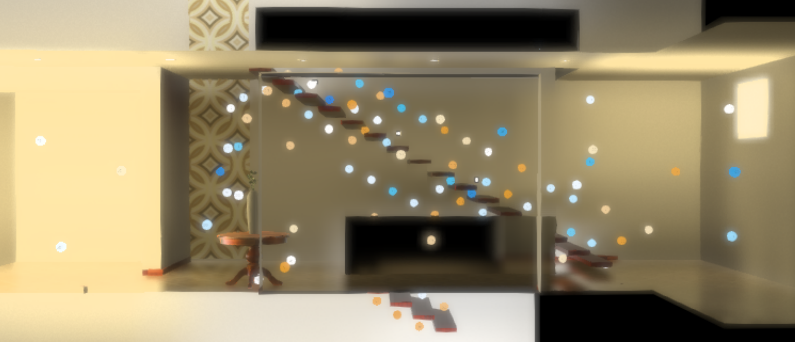
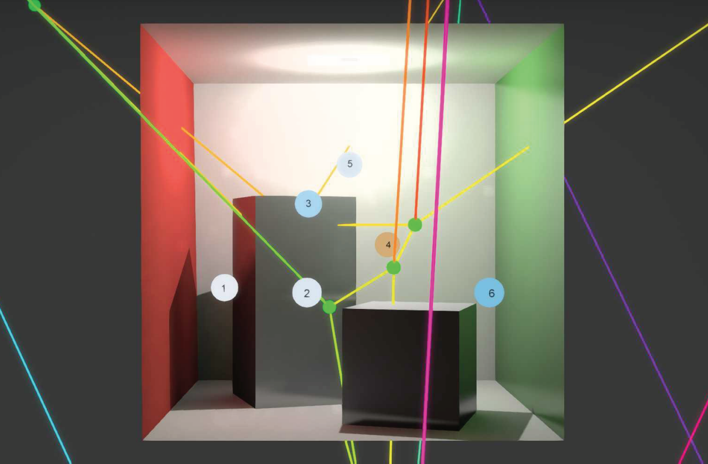
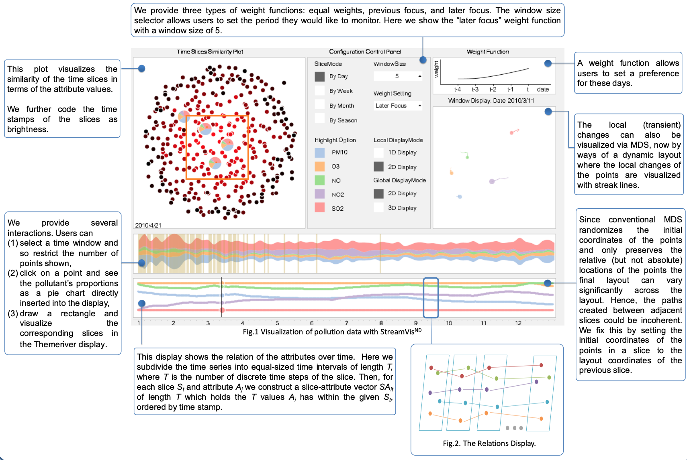

| 
|
Fast Non-uniform Radiance Probe Placement and Tracing
Y. Wang, S. Khiat, P. G. Kry, D. Nowrouzezahrai
ACM SIGGRAPH Symposium on Interactive 3D Graphics and Games 2019, Montreal, Canada
Best Student Presentation
Contribution:
Non-uniform probe placement for full geometric coverage and reduce grazing angle sampling biases
Efficient probe ogannizing structure for fast run-time ray tracing
Adaptive probe ray tracer caches visibility information in a sparse voxel octree
Hierarchical-Z accelerated probe-space ray marching
[paper][video]
|
| 
|
Automatic Placement of Radiance Probes
Master's Thesis, M. Sc. McGill University, 2019
Contribution:
Overivew of probe-based solutions in the game industry and rendering applications
Explored multiple solutions to generate skeleton from 3D geometry for candidate probe positions
Explored run-time optimizations for non-unform probe lookups
Provided extensive performance and memory comparisons in different style of geometries
[full thesis]
|
| 
|
StreamVisND: Visualizing Relationships in Streaming Multivariate Data
IEEE Symposium on Visual Analytics Science and Technology 2015, Chicago, USA
S. Cheng, Y. Wang, D. Zhang, Z. Jiang, K. Mueller
Honorable Mention
Contribution:
Provided multiple aspects for understanding the relations of high-dimensional multivariate data
Interactive highlighting for intuitive demonstration of time/variable corellation
[poster]
|